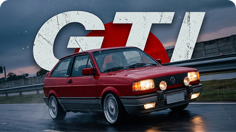
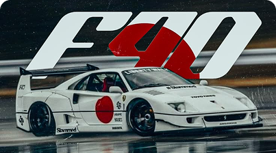
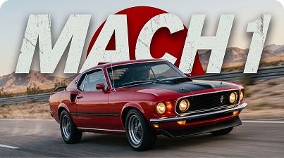
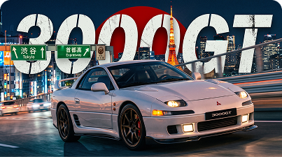
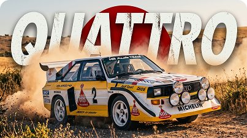
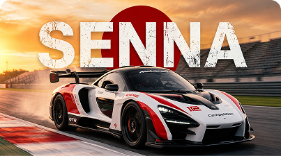
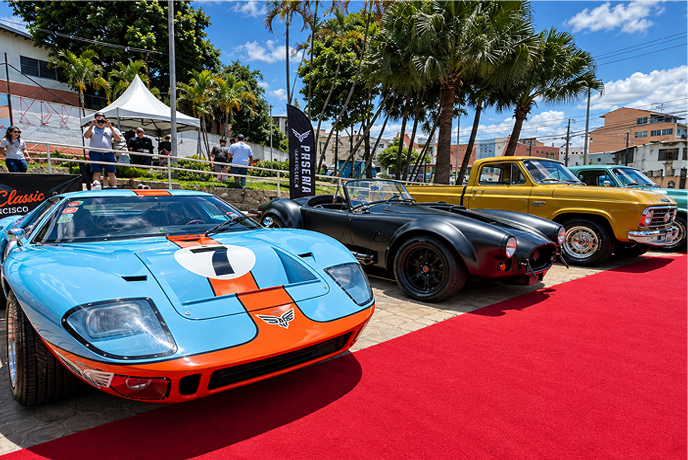
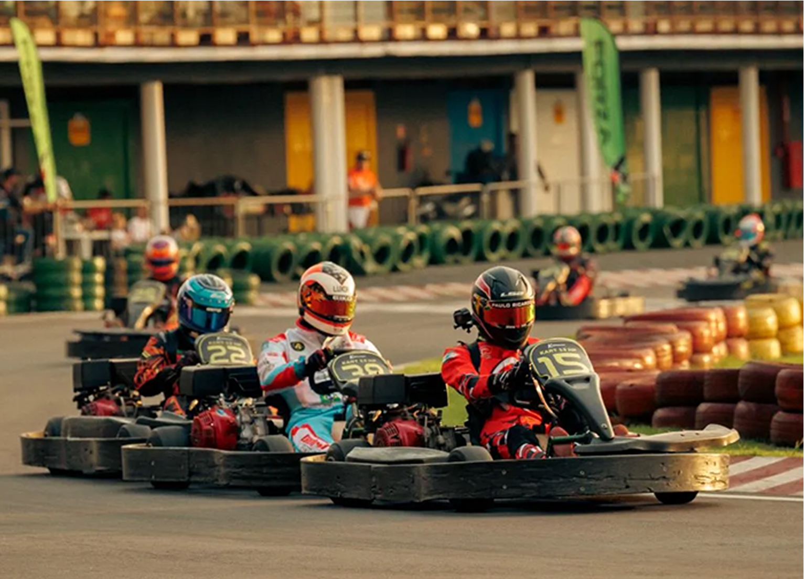
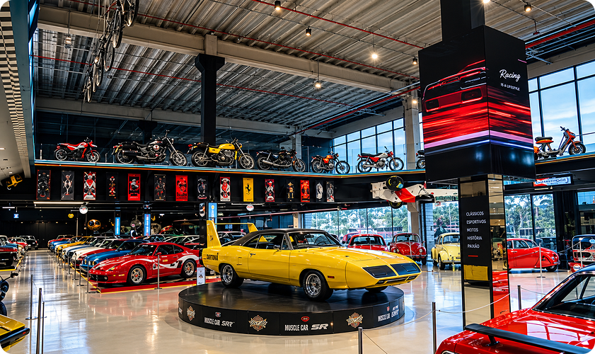

CLASSICOS E NACIONAIS
Modelos historicos que marcaram epocas e continuam vivos em projetos e encontros.
A cultura automotiva vai muito alem dos carros e de suas modificacoes. E um universo movido pela paixao por maquinas, encontros e historias que unem pessoas de perfis diferentes com o mesmo interesse.
Presente nas ruas e nas pistas, ela mistura tecnologia, design, memoria e comunidade. De carros classicos a projetos modernos, cada detalhe representa um estilo proprio de viver e expressar essa paixao.

Nessa cultura, diversos estilos, gostos e projetos convivem juntos. Cada linha representa um olhar diferente sobre os carros.

Modelos historicos que marcaram epocas e continuam vivos em projetos e encontros.

Estilo urbano com personalizacao visual, mecanica e foco em identidade propria.

Potencia bruta, visual agressivo e carros que representam a forca americana.

Tecnologia, preparacoes de pista e referencias fortes da cena japonesa no mundo.

Tracao, controle e resistencia em terrenos extremos e provas de alta intensidade.

Desempenho extremo, aerodinamica avancada e maquinas pensadas para emocao total.
Dentro da comunidade, diversos encontros sao promovidos para reunir projetos, trocar experiencias e fortalecer a cultura.
Eventos em autodromos, ruas e espacos publicos aproximam apaixonados por carros e criam ambientes de troca e convivencia.


Uma forma acessivel de viver o motorsport. Os kartodromos permitem o contato direto com a pilotagem em pistas preparadas e seguras.
Tanto para lazer quanto para competicao, esse ambiente aproxima novos pilotos da experiencia real das pistas.
Espacos dedicados a historia automotiva preservam modelos lendarios e apresentam ao publico a evolucao da engenharia e do design.
Sao locais ideais para conhecer de perto icones do passado e tendencias do futuro.

A cultura automotiva tambem vive na televisao, no cinema e na internet, com conteudos que influenciam estilos e aproximam novos apaixonados.
De programas especializados a filmes de corrida, o tema segue forte no entretenimento.
Jogos de corrida sempre foram porta de entrada para muitos entusiastas, conectando nostalgia, competicao e paixao por carros.
Titulos de simulacao e arcade ajudaram a construir referenciais fortes para diferentes geracoes.